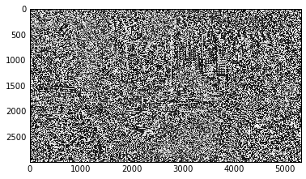

Python 2.7.12 |Anaconda 4.1.1 (64-bit)| (default, Jun 29 2016, 11:07:13) [MSC v.1500 64 bit (AMD64)]
Type "copyright", "credits" or "license" for more information.
IPython 4.2.0 -- An enhanced Interactive Python.
? -> Introduction and overview of IPython's features.
%quickref -> Quick reference.
help -> Python's own help system.
object? -> Details about 'object', use 'object??' for extra details.
%guiref -> A brief reference about the graphical user interface.
In [1]: runfile('C:/Users/jgpd/Desktop/Temp Programming/Computer Vision/Exercise4/exercise4.py', wdir='C:/Users/jgpd/Desktop/Temp Programming/Computer Vision/Exercise4')
In [2]: Image.open('flower.jpg').convert('L')
Out[2]:
In [3]: Image.open('img1_large_3.jpg').convert('L')
Traceback (most recent call last):
File "<ipython-input-3-a40fd05eb69b>", line 1, in <module>
Image.open('img1_large_3.jpg').convert('L')
File "C:\Users\jgpd\Desktop\Temp Programming\Anaconda2\lib\site-packages\PIL\Image.py", line 2280, in open
fp = builtins.open(filename, "rb")
IOError: [Errno 2] No such file or directory: 'img1_large_3.jpg'
In [4]: Image.open('img_large.jpg').convert('L')
Out[4]:
In [5]: problem1('flower.jpg')
In [6]: problem2('flower.jpg')


In [7]: problem1('img_large.jpg')


In [8]: problem2('img_large.jpg')
<matplotlib.figure.Figure at 0xca57b00>
Traceback (most recent call last):
File "<ipython-input-8-1f066e8dea4c>", line 1, in <module>
problem2('img_large.jpg')
File "C:/Users/jgpd/Desktop/Temp Programming/Computer Vision/Exercise4/exercise4.py", line 42, in problem2
diff = abs(im_array - array(im_scale))
ValueError: operands could not be broadcast together with shapes (2988,5312) (5312,2988)
In [9]: problem2('empire.jpg')


In [10]: